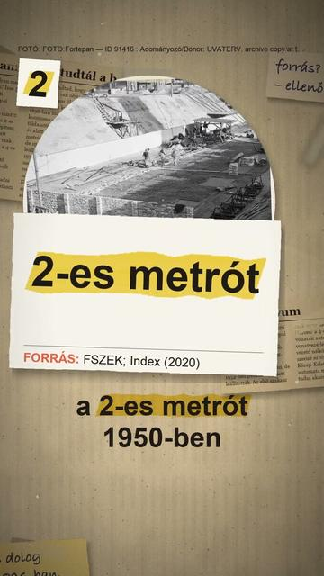

Megnézem a YouTube-on3 dolog, amit nem tudtál a budapesti metróról
Röviden: A budapesti kisföldalatti (ma 1-es metró) 1896. május 2-án indult el a millenniumi ünnepségek alkalmából; a Történelemtanárok Egylete szerint az európai kontinens első villamos földalattija volt, és kevesebb mint két év alatt épült meg.
A budapesti kisföldalatti (ma 1-es metró) 1896. május 2-án indult el a millenniumi ünnepségek alkalmából; a Történelemtanárok Egylete szerint az európai kontinens első villamos földalattija volt, és kevesebb mint két év alatt épült meg. A kelet–nyugati, ma 2-es metró építése 1950-ben kezdődött, de 1954-ben pénzhiány miatt leállították; az Örs vezér tere – Deák tér szakasz 1970 áprilisában nyílt meg. A 4-es metró 2014 márciusában indult; a szerelvényeket automata vonatvezérlés irányítja, a próbaüzem idején még járműkísérő ült a vonatokon. Az Alstom szerint ez volt Közép-Kelet-Európa első automata metróvonala.
Az összes rész forrásokkal: https://valoban.pages.dev/
Források
- BKV: Budapest's Millenium Underground turns 130 (2026)
- BKV: 125 éves a millenniumi földalatti (tényanyag)
- Történelemtanárok Egylete: A budapesti tömegközlekedés története
- Bertalan János – Belli Béla: Infrastrukturális szolgáltatási ágazatok fejlődése (FSZEK Budapest-gyűjtemény)
- Index: 50 éves a 2-es metró (2020)
- Alstom: Alstom metros start carrying passengers on Budapest's line 4 (2014)
- BKK: Utolsó fázisához érkezett a speciális tesztidőszak az M4-es metró vonalán (2015)
- Railway Gazette: Budapest line M4 cleared to go driverless (2016)
8 forrás · Hogyan ellenőrzünk?
Hibát találtál? Írd meg nekünk, megnézzük.
Képek és kreditek
Ez a videó a felhasznált CC BY-SA képek miatt CC BY-SA 4.0 licenc alatt érhető el (https://creativecommons.org/licenses/by-sa/4.0/).
Licencek: CC0 (https://creativecommons.org/publicdomain/zero/1.0/) · CC BY 2.0 (https://creativecommons.org/licenses/by/2.0/) · Public domain (https://creativecommons.org/publicdomain/mark/1.0/) · CC BY-SA 3.0 (https://creativecommons.org/licenses/by-sa/3.0/)
• a 4-es metró Alstom-szerelvénye belülről (2023) – Random photos 1989, CC0 https://commons.wikimedia.org/?curid=141074062 https://commons.wikimedia.org/?curid=141074061
• a 4-es metró Fővám téri állomása (Spora Architects) – Fred Romero from Paris, France, CC BY 2.0 https://commons.wikimedia.org/?curid=78180416
• a földalatti építése az Aréna útnál (Klösz György, 1896) – György Klösz, Public domain https://commons.wikimedia.org/?curid=6766317
• a földalatti építése a Gizella (ma Vörösmarty) téren (Klösz György, 1896) – György Klösz, Public domain https://commons.wikimedia.org/?curid=11106430
• a budapesti földalatti motorkocsija a párizsi világkiállításon (1900) – Unknown photographer, Public domain https://commons.wikimedia.org/?curid=113500067
• a kisföldalatti a Hősök terénél (1973 előtt) – Unknown author Unknown author, Public domain https://commons.wikimedia.org/?curid=603067
• a félbehagyott metróépítés a Deák Ferenc téren (Fortepan, 1955) – FOTO:Fortepan — ID 18691 : Adományozó/Donor: UVATERV. archive copy at the Wayback Machine, CC BY-SA 3.0 https://commons.wikimedia.org/?curid=49570567
• a metróépítés felvonótornya a Szent István térnél – a munka ekkor szünetelt (Fortepan, 1956) – FOTO:Fortepan — ID 24448 : Adományozó/Donor: Nagy Gyula., CC BY-SA 3.0 https://commons.wikimedia.org/?curid=49691083
• a metró tervezett végállomásának építése a Kerepesi úton (Fortepan, 1951) – FOTO:Fortepan — ID 91416 : Adományozó/Donor: UVATERV. archive copy at the Wayback Machine, CC BY-SA 3.0 https://commons.wikimedia.org/?curid=51213881
• az Örs vezér tere (Fehér út) metróvégállomás (Fortepan, 1970) – FOTO:Fortepan — ID 97803 : Adományozó/Donor: UVATERV. archive copy at the Wayback Machine, CC BY-SA 3.0 https://commons.wikimedia.org/?curid=51365281
A képek módosítva: 9:16-ra kivágva, átméretezve, kameramozgással, ráégetett felirattal.